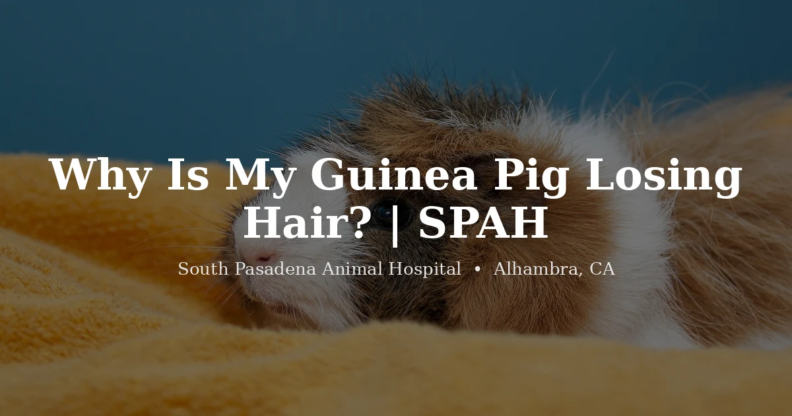

October 14, 2026 · 7 min read
Why Is My Guinea Pig Losing Hair?

When owners point out a bald patch on their guinea pig, our first move is to look at the skin underneath, not just the missing fur. Hair is only the surface. The skin — is it calm and clean, or red, flaky, and scabby? — usually tells us far more about what's going on. Guinea pigs lose hair for a handful of fairly specific reasons, and the good news is that most are treatable once you know which one you're dealing with.
A little shedding here and there is normal. A pregnant or nursing sow can thin out too. But a genuine bald spot, broken skin, or hair loss that comes with scratching or weight change is a different story, and it's worth sorting out rather than waiting to see if it fills back in.
Mites — the one we think of first
If a guinea pig is losing hair and clearly itchy, the guinea pig mange mite is at the top of our list. It burrows into the skin and causes intense itching, hair loss, and crusty or scabby patches, often starting around the back, hindquarters, and inner thighs. In bad cases the itching is so severe it triggers pain responses that look alarmingly like seizures — we've had owners rush in genuinely afraid their guinea pig was having a neurological crisis, when the real culprit was mites.
This one matters because it doesn't resolve on its own, it's uncomfortable for the animal, and it spreads to cagemates. It needs a vet to confirm and treat. Please don't reach for a dog or cat flea product off the shelf — dosing for a guinea pig is not something to guess at, and the wrong product can do harm.
Ringworm
Despite the name, ringworm is a fungus, not a worm. In guinea pigs it tends to show up as flaky, crusty hair loss around the face, nose, and ears first, then spreads. It's worth knowing that ringworm is zoonotic — it can pass to people and other pets — so if anyone in the household has developed a round, scaly, itchy patch, mention it. A vet can confirm ringworm and guide treatment, which usually runs several weeks.
Ovarian cysts (in females)
Here's a pattern that's almost a signature: an unspayed female guinea pig, usually middle-aged or older, losing hair evenly over both flanks in a balanced, symmetrical way, with no itching. That picture points strongly to ovarian cysts, which are extremely common in sows as they age. Sometimes you'll also notice crusty nipples or a bit of a belly. A vet can confirm it on exam, often with imaging, and walk you through management — which frequently includes discussing a spay, both to resolve the cysts and prevent future reproductive problems.
Barbering
Sometimes the hair isn't falling out — it's being chewed off. Guinea pigs may barber themselves out of boredom or stress, or a dominant cagemate may trim a companion's coat. The tell is that barbered areas have stubbly, broken hairs rather than smooth bald skin, and they're usually in places the chewer can reach. A boredom or hierarchy issue is still worth a look, because a vet can help rule out an underlying skin problem driving the behavior before you chalk it up to habit.
Vitamin C and general health
Guinea pigs can't make their own vitamin C, so they depend entirely on diet for it — which is a quirk that trips up a lot of owners. A deficiency can leave the coat rough and poor, along with a sore, reluctant guinea pig. Hair quality also drops when a guinea pig is simply unwell from something else entirely, like dental disease or chronic pain. That's why we never look at the coat in isolation; we look at the whole animal.
When to call a vet
We'd want to see a guinea pig that:
- Is scratching a lot, or has scabby, crusty, or broken skin
- Has true bald patches rather than light, even shedding
- Is a female losing hair symmetrically over both flanks
- Has flaky hair loss around the face, nose, or ears
- Is losing hair along with weight loss, reduced appetite, or acting painful
Skin problems in guinea pigs rarely get better on their own, and most are uncomfortable while they drag on, so sooner beats later. We see guinea pigs routinely at our guinea pig vet in Alhambra. You can read more about common issues in our guide to guinea pig health problems, or check our exotic vet services and pricing page to know what to expect.
Frequently Asked Questions
Is it normal for guinea pigs to lose hair?
A little background shedding is normal, as is some thinning in a pregnant or nursing sow. A true bald patch, broken or scurfy skin, or hair loss with scratching or weight change is not — those point to a medical cause worth checking rather than a seasonal shed.
Can guinea pig mites cause hair loss?
Yes, and they're one of the most common causes we see. The mange mite causes intense itching, hair loss, and crusty skin, and in severe cases can trigger pain responses that look like seizures. It needs a vet to diagnose and treat — it won't clear on its own and spreads between cagemates.
Why does my female guinea pig have symmetrical hair loss on her sides?
Balanced hair loss over both flanks in an unspayed female is a classic sign of ovarian cysts, which are very common in sows as they age. A vet can confirm it on exam, often with imaging, and discuss management, including spay.
When should I take my guinea pig to the vet for hair loss?
Soon. Guinea pig skin problems rarely improve without treatment and are often uncomfortable. See a vet promptly for itching, scabs or broken skin, flaky patches, symmetrical flank balding, or any hair loss combined with weight loss or reduced appetite.